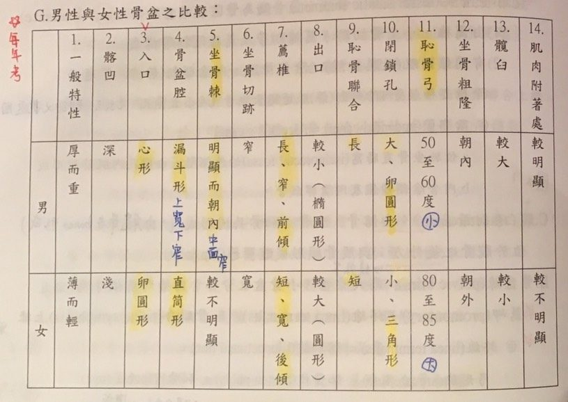
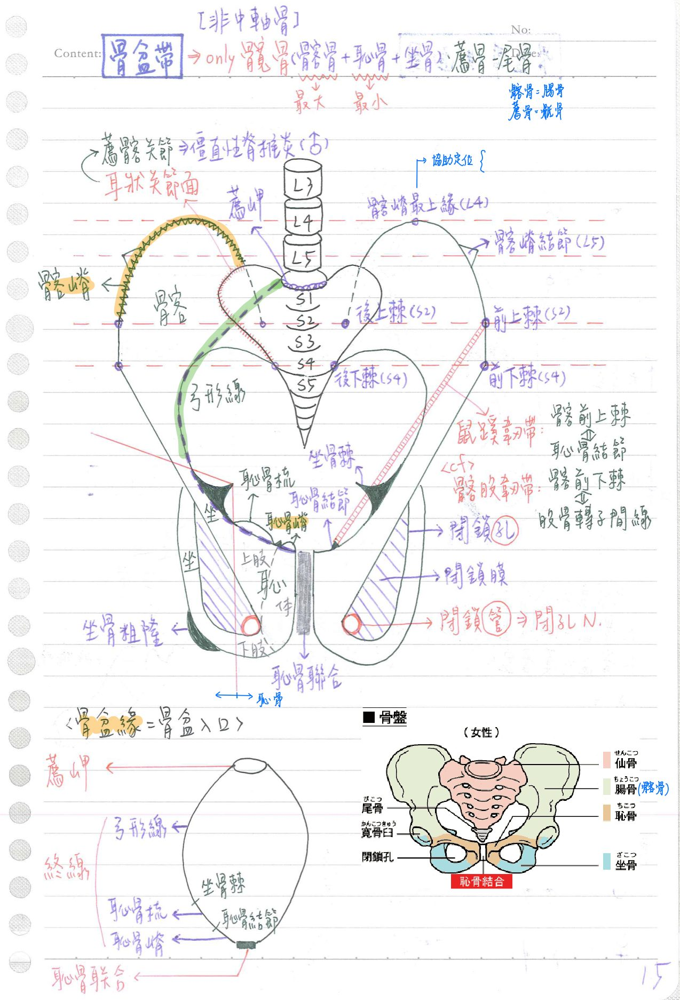
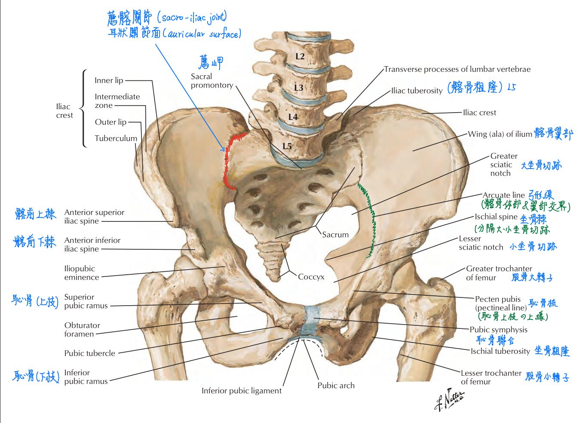
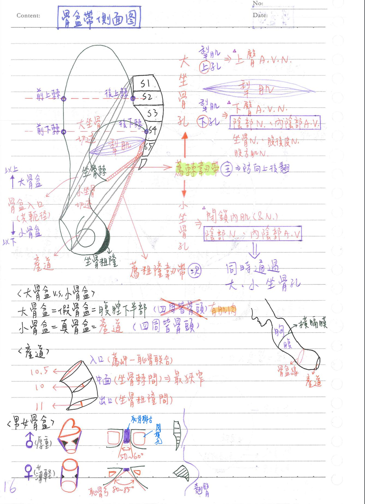
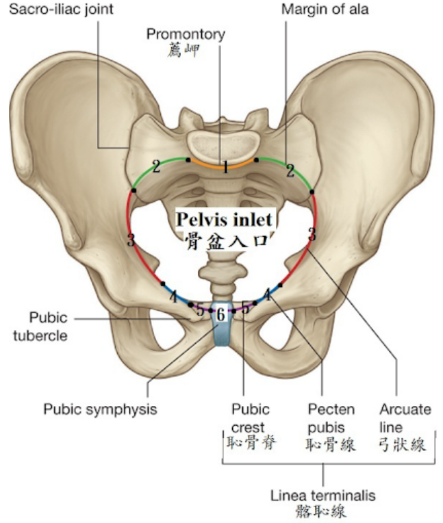

🦴 骨骼系統(骨盆)
骨盆骨頭總覽：皆為融合骨
- 骨盆(髖骨+薦骨+尾骨)≠骨盆帶(僅由髖骨構成)
- 髖骨(coxal/hip bone)x2：3融合為1
- 薦骨(sacrum)=觝骨：5融合為1
- 尾骨(coccyx)：4融合為1
髖骨(hip bone)=髂骨+恥骨+腸骨
髂骨/腸骨(ilium)：位於髖骨上部，髖骨中最大的部分，分為體部+翼部
- 體部：外側面形成髖臼(acetabulum)的一部分
- 翼部(wing, ala)：
- ★髂嵴(iliac crest)：髂骨上緣(髂骨前上棘~髂骨後上棘)，最高點大約在L4高度
※可協助定位：腰椎穿刺(L3-L5)、臀部肌肉注射- 髂骨前上棘：約S2高度
- 髂骨後上棘：約S2高度
- 髂骨結節(tubercle of iliac crest)：約L5高度，髂嵴之外突起，約位於腋中線上
- 髂凹/髂窩(iliac fossa)：位於腹面，有髂肌附著
- 耳壯關節面(auricular surface)：與薦椎形成薦髂關節(sacroiliac joint)→僵直性脊椎炎好犯處
- 僵直性脊椎炎(ankylosing spondylitis)：好犯薦髂關節，少數男性居多的自體免疫疾病
- ★髂嵴(iliac crest)：髂骨上緣(髂骨前上棘~髂骨後上棘)，最高點大約在L4高度
- 弓形線(arcuate line)：體部&翼部的交界，位於髂凹下緣
- 連接髂骨的兩條韌帶：
- 鼠蹊韌帶(inguinal l.)：髂骨前上棘—>恥骨結節
- 髂股韌帶(iliofemoral l.)：髂骨前下棘—>股骨轉子間線
恥骨(pubis)：髖骨的前下部，髖骨中最小的部分，由體部+2枝部構成
- 體部：
- 恥骨聯合(symphysis pubis)：左右恥骨體相關結處
- 恥骨嵴(pubic crest)：恥骨體部之上緣(恥骨結節-恥骨聯合上緣)
- 恥骨結節：恥骨體部的外突起
- 枝部：分為上、下枝，與坐骨上、下枝共同形成閉鎖孔
- 閉鎖孔(obturator foramen)：
- 閉鎖膜(obturator membrane)：封閉閉鎖孔
- 閉鎖管(obturator canal) ：閉鎖孔上的通道，有閉孔N通過
- 恥骨梳(pecten pubis)=恥骨線(pectineal line)：恥骨上枝的上緣
- 閉鎖孔(obturator foramen)：
坐骨(ischium)：髖骨的後下部，由體部+2枝部構成
- 體部：外側面形成髖臼(acetabulum)
- ★坐骨粗隆：坐姿時接觸椅面處；
- ★坐骨棘：大、小坐骨切跡之分界
- 大坐骨切跡(上)：髂骨形成(髂骨後下棘→坐骨棘)
- 小坐骨切跡(下)：坐骨形成(坐骨棘→坐骨粗隆)
- ★附著於坐骨棘上的構造：提肛肌、尾骨肌(形成骨盆隔膜的兩塊肌肉)、上孖肌、薦棘韌帶
- 枝部：分上、下枝；與恥骨上、下枝共同形成閉鎖孔
- 連接坐骨的兩條韌帶：
- 薦粗隆韌帶(sacrotuberous l.)：薦椎→坐骨粗隆
- ★薦棘韌帶(sacrospinous l.)：薦椎→坐骨棘；分隔大、小坐骨孔
- 薦棘韌帶(主要)、薦粗隆韌帶(次要)：防止因體重下壓而使薦椎&尾椎於薦髂關節處向後向上旋轉
- ★★大坐骨孔(greater sciatic foramen)：骨盆→臀部(出口)
- 組成：薦椎、大坐骨切跡、薦棘韌帶、薦粗隆韌帶
- 梨肌(piriformis)：經過大坐骨孔中央(起自薦椎→止於股骨大轉子上緣；司大腿外旋)
- 內容物：
- ★梨肌上孔：上臀N &上臀A/V通過
- 梨肌下孔：下臀N&下臀A/V(供應臀大肌血液)、坐骨N、陰部N、內陰部A/V、股後皮N、股方肌N通過
- ★★★★小坐骨孔(lesser sciatic foramen)：臀部→骨盆(入口)
- 組成：薦椎、小坐骨切跡、薦棘韌帶、薦粗隆韌帶
(大小坐骨孔的組成差異只有大or小坐骨切跡而已)
- 內容物：閉孔內肌(及其神經)、陰部N、內陰部A/V
- ★陰部N、內陰部A/V通過大、小坐骨孔(先由大坐骨孔出去，再由小坐骨孔折返進入骨盆)
- 組成：薦椎、小坐骨切跡、薦棘韌帶、薦粗隆韌帶
髖臼(acetabulum)：由髂骨、坐骨、恥骨共同形成
- 位於髖骨的後外下端；和股骨頭形成→髖關節(hip joint)
- ★★★骨盆緣(pelvic brim)：為大小(真假)骨盆之分界
- [重點]沿(由後往前)：薦岬(promontory)→終線(linea terminalis)→恥骨聯合上緣
※終線(linea terminalis)=髂恥線(iliopectineal line)
=弓形線(arcuate)+恥骨梳(pecten pubis)+恥骨嵴(pubic crest)
- [重點]沿(由後往前)：薦岬(promontory)→終線(linea terminalis)→恥骨聯合上緣
假骨盆(大骨盆)：腹腔下部分；★骨盆緣之上
- 界線：骨頭+肌肉
- 後方：腰椎(L3-L5)
- 前方：腹壁肌肉
- 側壁：髂凹
真骨盆[小骨盆、產道(birth canal)]：骨盆緣之下
- 界線：全是骨頭
- 後方：薦椎、尾椎
- 前方：恥骨
- 側壁：坐骨內側面
- 骨盆平面(pelvic plane)&骨盆測量(pelvimetry)
- 入口(inlet)：(1)產科共軛徑(薦岬—恥骨聯合)：約10.5cm
(2)橫徑：約13.5cm(骨盆最寬處)
- 中面(mid-plane)：坐骨棘間橫徑，約10cm(產道最狹窄處)
- 出口(outlet)：(1)前後徑(薦骨下緣-恥骨聯合下緣)：約13.5cm
(2)橫徑(坐骨粗隆之間)：約11cm
- 胎頭骨盆不對稱(CPD, cephalopelvic disproportion)：胎兒的頭(約9.8cm)>產道(最窄處約10cm)—>只能剖腹產(C/S)
- 入口(inlet)：(1)產科共軛徑(薦岬—恥骨聯合)：約10.5cm
男女骨盆差異之比較：

- ★骨盆內外口間距(通道長度)：男長；女短




📖 書本補充：與筆記不同或筆記沒寫到的地方
⚠️
以下為對照書本後整理，筆記原文未更動。標「筆記 vs 書」的是兩邊寫法不同、建議回頭確認的地方。
髖骨（p.274）
- 恥骨上枝：參與形成髖臼，往外側延伸為恥骨梳；恥骨下枝：參與形成閉孔；恥骨體的恥骨嵴往外側終止成恥骨結節。
- 坐骨體形成髖臼、坐骨枝形成閉孔；坐骨棘在體和枝之間，隔開坐骨大、小切跡。
- 書的提示：髂前上棘（ASIS）的三個特性（筆記只寫到鼠蹊韌帶）——
- 腹股溝（鼠蹊）韌帶的外側附著處。
- 與肚臍連線的外側三分之一為 McBurney 氏點（體外判斷闌尾位置）。
- 是縫匠肌和闊筋膜張肌的起始點。
- 筆記 vs 書：髂前上棘高度，筆記寫「約 S2」；書 p.105 的棘間平面（通過兩側 ASIS）寫 S1。
骨盆的特點（p.275）
- 大、小骨盆：
- 小骨盆＝真骨盆：骨盆緣以下，內含骨盆器官（真正的骨盆腔）。
- 大骨盆＝假骨盆：髂翼頂端到骨盆緣，內含部分腹部臟器（106-1-7：乙狀結腸）。
- 筆記 vs 書：骨盆緣的組成。筆記寫「薦岬 → 終線 → 恥骨聯合上緣」；書上寫骨盆緣（＝骨盆入口）＝薦岬＋薦翼緣（margin of ala）＋終線，終線＝恥骨嵴＋恥骨梳＋弓狀線。筆記少了薦翼緣。
- 106-1-25：髂嵴不是骨盆入口的界限，它是大骨盆的上緣。
- 男女骨盆（筆記只放圖）：
| 女性 | 男性 | |
|---|---|---|
| 一般構造 | 較薄且較輕 | 較厚且較重 |
| 骨盆入口 | 較寬；卵圓或圓形 | 較窄；心形 |
| 骨盆出口 | 相對較大 | 相對較小 |
| 恥弓 | 較寬（＞80°） | 較窄（＜70°） |
骨盆的孔洞（p.277–278）
- 坐骨大孔分梨狀肌上、下（與筆記一致）。梨狀肌下方另寫明位置在梨狀肌和薦棘韌帶之間。
- 坐骨小孔位於薦棘韌帶和薦粗隆韌帶之間。
- 閉孔：由坐骨體和枝及恥骨體和枝圍成；閉孔神經和閉孔血管經由閉孔管通過（筆記只寫閉孔N）。
- 記憶法：
- 通過坐骨小孔的構造較少（陰部神經、陰部內血管、到閉孔內肌的神經、閉孔內肌），記住它們，其餘的就是坐骨大孔。
- 閉孔內肌通過坐骨小孔，所以支配它的神經也走同一個孔；會陰在骨盆下方，到會陰的神經血管合理上也會繞經坐骨小孔。
- 112-1-30 解析：陰部神經由坐骨大孔繞過薦棘韌帶再進坐骨小孔，所以薦棘韌帶受傷最可能傷到陰部神經。
- 112-1-25 解析：陰部管是沿著骨盆壁走的管道，並沒有「穿過」骨盆壁。
📝 書中歷屆考題（點選答案作答）
106-1-7p.276
有關大骨盆 (greater pelvis) 的敘述，下列何者正確？
106-1-25p.276
下列何者不形成骨盆入口 (pelvic inlet) 的界限？
💡 髂嵴構成大骨盆的上緣，不是骨盆入口。
106-2-9p.276
骨盆入口 (pelvic inlet) 骨折最容易傷及下列何者？
💡 只有恥骨梳是構成骨盆入口的構造。
103-2-18p.278
閉孔內肌 (obturator internus) 的肌腱通過下列何處？
107-1-8p.278
下列何者不附著於坐骨棘 (ischial spine) 上？
💡 薦棘韌帶由薦椎到坐骨棘，尾骨肌貼在它前面，兩者都附著坐骨棘；梨狀肌則附著到大轉子附近。
112-1-25p.279
下列何者不是穿過骨盆壁的構造？
💡 陰部管沿著骨盆壁走，並無「穿過」骨盆壁。
112-1-30p.279
車禍撞擊傷及薦棘韌帶 (sacrospinous ligament)，下列何者最可能因此受傷？
💡 陰部神經由坐骨大孔繞過薦棘韌帶到坐骨小孔。